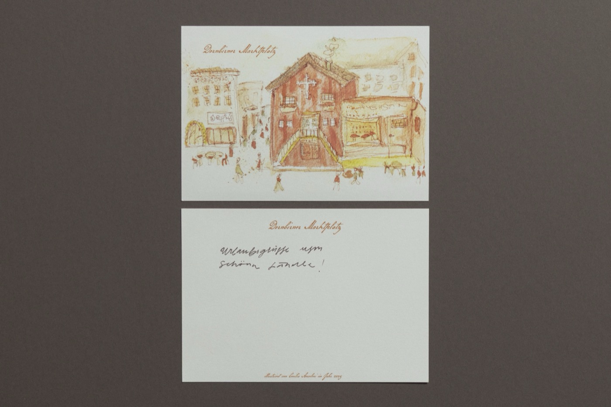
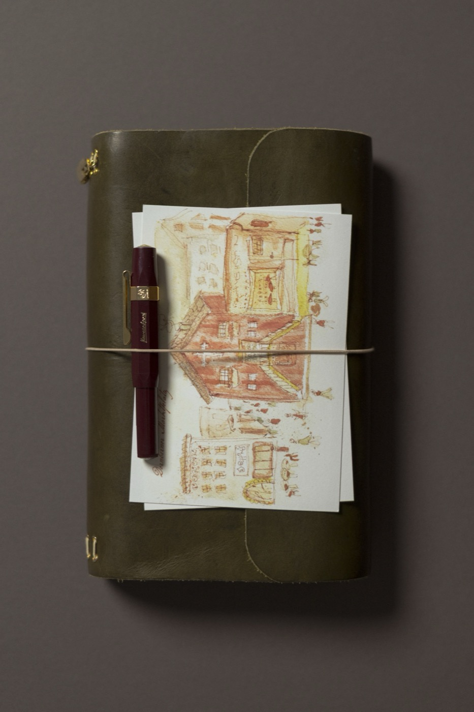
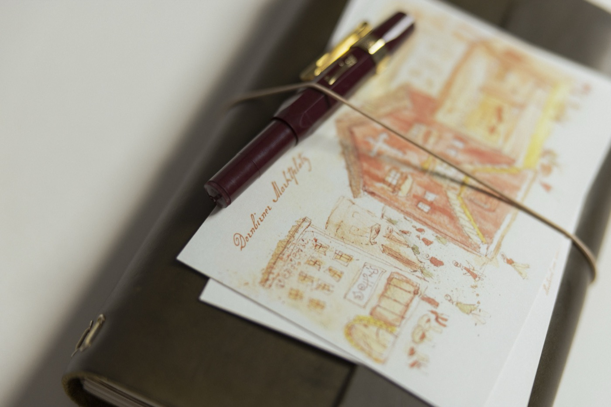
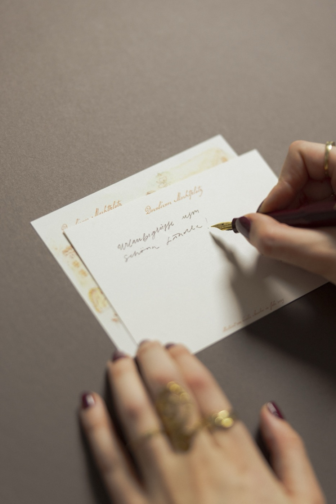
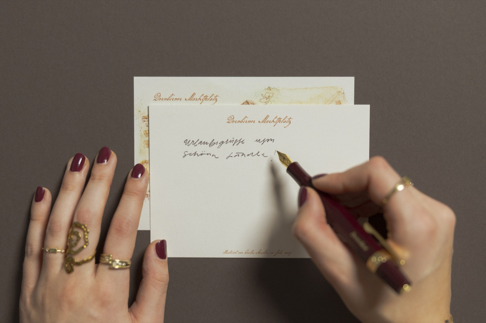

Bei der Dornbirn Postkarte habe ich den Dornbirner Marktplatz aus dem Kopf so wie ich ihn kenne skizziert und mit Aquarell verfeinert. Es sind die Bar Johns, das Rote Haus – ein klassisches Wahrzeichen – und die Bar Augustin klar zu sehen. Der Stadt fehlen illustrierte Postkartenansichten, welche ich mit dieser hier mit Schrift vervollständigt habe.




